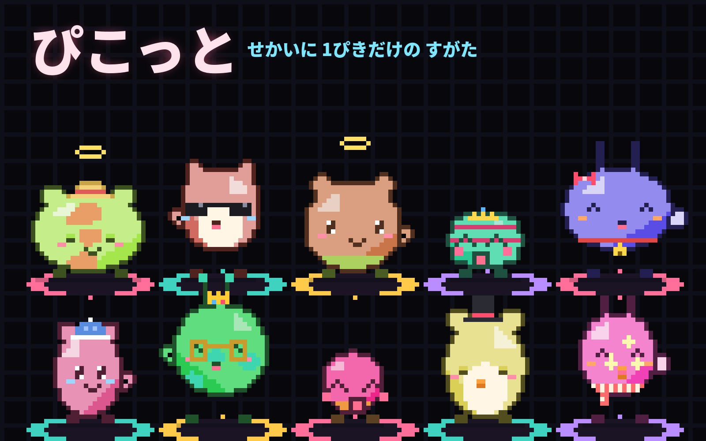

ぴこっとPikotto
ふしぎなたまごからかえるのは、色・体型・目・模様がすべてランダムに決まる、せかいに1ぴきだけのドットのいきもの。はじめは「ぴぃ！」としか言えないその子が、毎日会いに行くうちに、ことばを覚え、やがてあなたの名前をよんでくれるようになります。The creature that hatches from the mysterious egg has a completely random color, shape, eyes and pattern — there is only one like it in the world. At first it can only say "pii!", but if you visit every day it learns words, and one day it calls you by name.
遊び方How to play
- たまごを5回タップしてかえし、その子と自分の名前を決めるTap the egg five times to hatch it, then name it and tell it your name
- ごはん・なでる・あそぶでお世話。おなかとごきげんは本当の時間に合わせて減っていくFeed it, pet it and play with it. Hunger and mood drop in real time
- 「おしえる」でことばを聞かせる。別の日にくり返し聞かせると覚えて、場面に合わせて使ってくれるTeach it words. Repeat them on different days and it remembers them and uses them at the right moments
見どころHighlights
- 見た目は約281兆通りの番号から決まる。耳やしっぽ、特別なアクセは、育ってからのおたのしみEach look comes from one of about 281 trillion numbers. Ears, tails and special accessories appear as it grows
- あかちゃん → こども → おとなと成長し、2語、そして短い文で話せるようになるIt grows from baby to child to adult, moving from single words to short sentences
- しばらく会えないとさみしがるけど、会えた瞬間とびきりの笑顔でむかえてくれるStay away for a while and it gets lonely — but the moment you come back, it greets you with its biggest smile
- 着せ替え（あたま・かお・くび、全17種）と、へやのもようがえDress-up for head, face and neck (17 items) and room decorations
- こうえん・うみ・ほしのおかへおでかけして、たからもの探し。その場所でしか見つからないレアな着せ替えもOutings to the park, the beach and Star Hill to dig up treasures, including rare outfits found nowhere else
- ミニゲーム「おやつキャッチ」、毎日かわる「きょうのおねがい」、XにシェアできるしゃしんThe Snack Catch mini-game, daily requests, and photos you can share on X
育てるコツTips
ことばは同じ日に何回聞かせても1回分しか覚えないので、毎日少しずつ教えるのが近道です。「おはよう」「ごはん」「すき」「かわいい」などのことばは、あいさつや食事、着せ替えのときに使ってくれます。こどもになると「うみ」、おとなになると「ほしのおか」へおでかけできるようになるので、なかよし度を上げて成長させましょう。It only learns a word once per day no matter how many times you repeat it, so a little every day is the fastest way. Words like "good morning", "food", "love" and "cute" get used when it greets you, eats or tries on clothes. It can visit the beach once it is a child and Star Hill once it is an adult, so keep raising your friendship.
制作についてAbout the making
「毎日会いに行きたくなるいきもの」を目指して作りました。ほかの人と同じ子が出ないように見た目を完全ランダムにしたのは、自分だけの子だと思えるほど、毎日の小さな変化がうれしくなるからです。ことばを少しずつ覚えて名前をよんでくれる瞬間や、久しぶりに会えたときの笑顔など、会いに行く理由になる場面を大切にしています。スマホアプリとしての公開も準備中です。I made this aiming for a creature you want to visit every day. Every look is fully random so no one else gets the same one — when it feels truly yours, the small daily changes mean more. I focused on moments that give you a reason to come back, like the first time it calls your name or the smile it gives you after a long time apart. A smartphone app version is also in the works.